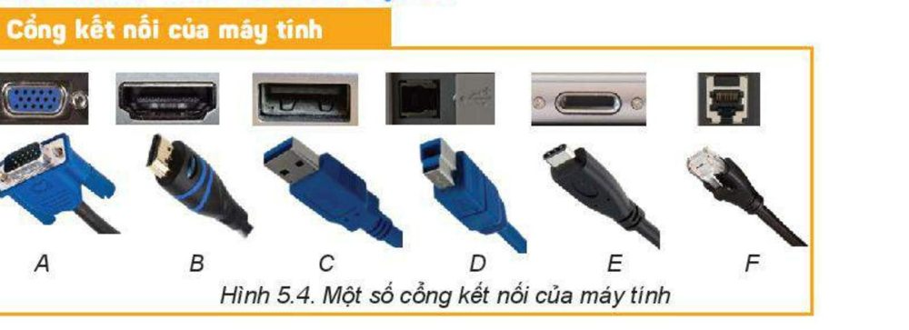

Chơi để hiểu bài — 7 hoạt động theo đúng thứ tự bài học.
Nhìn hình và đoán tên từng cổng kết nối (A → F).

Mỗi tình huống ứng với thiết bị Vào / Ra / Vào – ra. Chọn đúng loại.
Mỗi bạn có một nhu cầu khác nhau — xem thông số rồi chọn loại chuột phù hợp nhất.
Chọn loại máy in phù hợp nhất cho từng nơi.
Kết nối thiết bị không chỉ là "cắm dây". Bấm để kiểm tra từng bước.
Chọn đúng thiết bị cần ghép đôi trong danh sách quét được.
Vận dụng kiến thức của cả hai phần đã học (thiết bị + cổng kết nối).